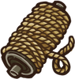
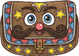
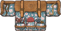
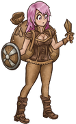

{kind=link}
冒险家
冒险家是一个可玩角色。冒险家会使用多种职业的物品或者细绳组合通用物品。
物品
初始物品
给予之袋
针线包
惊喜袋
专属物品
| 名称 | 效果 | 物品类型 | 稀有度 | 价格 | |
|---|---|---|---|---|---|
| 西兰花 | 每6s：获得2点 。如果你至少有5点 。如果你至少有5点 ，则会获得2层 ，则会获得2层 。 。 |
 食物 食物 |
罕见 | 4  |
|
 |
宝藏箱 | 购买此物品时：用价值10枚的物品代替此宝藏箱。可能包含 物品！ 物品！ |
配饰 | 史诗 | 7 |
|  | 细绳 |  的物品激活时：有20%的几率获得2点最大生命值。每有一个 的物品激活时：有20%的几率获得2点最大生命值。每有一个 的通用物品，几率再增加20%。 的通用物品，几率再增加20%。 |
配饰 | 普通 | 2 |
合成
这些合成物品是冒险家专属。
| 名称 | 效果 | 物品类型 | 稀有度 | 价格 | |
|---|---|---|---|---|---|
 |
大得离谱的荆棘剑 | * 当你至少有5层 ：耐力消耗减少到2，冷却时间降低到2s。 * 击中对手：消耗3层来获得6层 ：耐力消耗减少到2，冷却时间降低到2s。 * 击中对手：消耗3层来获得6层 ，还会获得6层 ，还会获得6层 。 * 每有一层 。 * 每有一层 或，造成的伤害+2。 或，造成的伤害+2。 |
  武器 武器 |
神级 | 31 |
 |
回旋镖 | * 击中对手：耐力消耗减少20%。有50%的几率偷取一层随机增益效果。 |  武器 武器 |
罕见 | 8 |
 |
西兰花黏黏 | 的物品激活达到6次：获得3点。如果你至少有5点，则会获得3层。 |
宠物 |
史诗 | 10 |
 |
匕首回旋镖 | * 击中对手：减少耐力消耗20%。有70%的几率偷取一层随机增益效果。 * 眩晕对手时：触发一次额外攻击。 |  武器 武器 |
史诗 | 12 |
 |
黏黏龙骑士 | * 战斗开始时：获得5层 。反弹4层减益效果。 * 击中对手：恢复生命值10点。 * 的物品激活时：快进15%冷却时间。 。反弹4层减益效果。 * 击中对手：恢复生命值10点。 * 的物品激活时：快进15%冷却时间。 |
  武器, 宠物 武器, 宠物 |
神级 | 18 |
 |
工作服 | * 商店刷新时：有35%的几率出现交易机会。 * 战斗开始时：获得70点 。抵抗6层减益效果。 。抵抗6层减益效果。 |
护甲 | 史诗 | 13 |
| 心形盾牌 | * 的物品获得的+30%,生命值恢复效果加强30%，且有30%的几率复制获得的。 * 被攻击时（ ）：有30%的几率抵挡14点伤害，移除对手0.7点耐力并获得1层（最高20层）。 * 消耗7层：还能抵挡和伤害，并获得150的最大生命值（单次触发）。 ）：有30%的几率抵挡14点伤害，移除对手0.7点耐力并获得1层（最高20层）。 * 消耗7层：还能抵挡和伤害，并获得150的最大生命值（单次触发）。 |
 盾牌 盾牌 |
神级 | 26 |
|
 |
英雄盾牌 | * 战斗开始时：的武器获得+1 +15%伤害加成。 * 被攻击时（）：有30%的几率抵挡15点伤害并移除对手0.4点耐力。 |
盾牌 | 罕见 | 10 |
 |
小鸟法杖 | * 攻击时：消耗3点 ：获得2点伤害加成。 * 的物品触发速度快10%（最高10次）。 * 移除对手2点。 ：获得2点伤害加成。 * 的物品触发速度快10%（最高10次）。 * 移除对手2点。 |
  武器, 宠物 武器, 宠物 |
神级 | 18 |
 |
宝石存钱罐 | * 宝石将在商店出售。 * 进入商店时：生成2个宝石碎片。 * 战斗开始时：每有一个镶入槽位的宝石，获得4点最大生命值。 | 配饰 | 史诗 | 10 |
 |
彩虹巨大西兰花黏黏 | 的物品激活达到9次：恢复生命值40点，获得20点，还有2层和2层，向对手施加3层 ，且的武器获得4点伤害加成。 ，且的武器获得4点伤害加成。 |
宠物 |
神级 | 53 |
| 麻绳 | 的物品激活时：的物品触发速度快10%，持续6s（多个麻绳效果不叠加，最多50%）。 |
配饰 | 罕见 | 4 |
|
 |
剑剪刀 | * 消耗3点：向两位玩家同时施加10层，持续5s（无法叠加）。 * 攻击落空：获得5点。 * 击中对手：消耗3点来获得3点伤害加成和1层。 * 对手每有一层，造成的伤害+1。 |
武器 |
神级 | 24 |
 |
超长矛 | * 击中对手：每有一个的空格，摧毁对手12点。你的对手受到的伤害+5%。 |
武器 |
史诗 | 14 |
子职业
这些是冒险家的子职业 物品。
| 名称 | 效果 | 物品类型 | 稀有度 | 价格 | |
|---|---|---|---|---|---|
 |
水银元素（武器大师） | * 造成/伤害时：获得造成伤害的45%作为。 * 每5s：每有一个不重复的的武器，恢复1点耐力。 * 每次消耗1点耐力：向对手施加2层 ，还对自身施加2层 ，还对自身施加2层 。 。 |
宠物 | 特别 | 10 |
 |
天平（商人） | * 商店刷新时:有40%的几率出现交易机会。 * 每2.8s：根据你现有最少的项，获得4点或3层。 * 对比和两侧物品。 * 在价值较低侧，每价值一枚，天平触发速度快2%。 * 如果两侧价值差距小于5：和侧物品触发速度快30%。 |
配饰 | 特别 | 10 |
| 软呢帽（考古学家） | * 找到物品的几率+65%。 * 你能多携带+3个物品。 * 战斗开始时：每有一个的物品，获得1点，且每有一个的物品，还会获得3点。 * 每2.3s：消耗1点来偷取2层其他增益效果。 * 基于几率触发的的物品获得25%触发几率加成。 |
头盔 | 特别 | 10 |
|
 |
乌龟（盾牌大师） | * 的盾牌抵挡伤害增加100%。 * 战斗开始时：两位玩家的伤害同时削减35%，持续7s。 * 每13s：获得50点，还有你的最大生命值的20%作为。 |
宠物 |
特别 | 10 |
 |
尤克里里（吟游诗人） | * 的 物品激活时：随机快进一个非物品冷却时间20%。 * 你的生命恢复效果加强20%。 * +15%的几率复制获得的增益效果。 每6s：恢复生命值30点，或获得5层随机增益效果，或向对手施加4层 物品激活时：随机快进一个非物品冷却时间20%。 * 你的生命恢复效果加强20%。 * +15%的几率复制获得的增益效果。 每6s：恢复生命值30点，或获得5层随机增益效果，或向对手施加4层 。 * 每有一个的物品，触发速度快10%。 。 * 每有一个的物品，触发速度快10%。 |
配饰 |
特别 | 10 |
专属技能
| 名称 | 效果 | 物品类型 | 稀有度 | 价格 | |
|---|---|---|---|---|---|
 |
双持武器 | 如果你正好拥有两把消耗耐力的武器，两把武器的攻击速度都加快20%且耐力消耗-30%。 | 技能 | 特别 | 5 |
 |
升级 | * 每5s：获得10点最大生命值，1点耐力，还有1点和1点。 * 在第3回合后的每回合触发速度都会快10%。 |
技能 | 特别 | 5 |
职业背包
| 名称 | 效果 | 物品类型 | 稀有度 | 价格 | |
|---|---|---|---|---|---|
|  | 给予之袋 | * 增加6格背包槽位。 * 所有职业的物品将在商店出售。 * 进入商店时：花费全部来生成一个随机物品。 * 背包内职业物品激活时：获得0.1点最大耐力。 | 背包 | 特别 | 16 |
|  | 针线包 | * 增加6格背包槽位。 * 购买细绳时：商店有70%几率刷新一个新细绳。 * 背包内的打造物品触发快15%，还有15%的几率复制获得的增益效果。 | 背包 | 特别 | 16 |
| 物品 |
|---|
衣柜
Q版皮肤需要在设置里打开。
-  默认
{kind=link}
（TreasureHunter）
{kind=link}
{kind=link}
（TreasureHunter）